import pandas as pd
import numpy as np
rng = np.random.default_rng(seed=5650)
import matplotlib.pyplot as plt
import seaborn as sns
cb_palette = ['#e69f00','#56b4e9','#009e73']
sns.set_palette(cb_palette)
import patchworklib as pw;
import pymc as pm
import arviz as azSkeptical, Weakly-Informative, and Strongly-Informative Priors
Labs
[Part 0] Our Simulated Coin Flips
all_flip_results = list(np.random.default_rng(seed=5650).binomial(n=1, p=0.5, size=250))
np.mean(all_flip_results)0.5Or truly random flips (from random.org), if preferred
true_random_flips = [
1,1,0,1,1,1,0,0,1,0,0,0,0,0,1,1,1,0,1,1,1,1,0,1,0,0,0,0,1,1,0,1,1,1,0,0,1,0,
1,1,1,0,0,0,1,0,0,0,0,1,1,0,1,1,1,0,1,0,1,0,0,1,0,1,1,0,1,0,1,0,1,0,1,1,0,0,
1,0,0,0,0,1,0,0,0,1,0,1,1,0,0,1,0,0,1,0,1,0,1,1
]
np.mean(true_random_flips)0.49one_flip_result = all_flip_results[:1]
one_flip_result[0]two_flips_result = all_flip_results[:2]
two_flips_result[0, 1]five_flips_result = all_flip_results[:5]
five_flips_result[0, 1, 0, 0, 1]ten_flips_result = all_flip_results[:10]
ten_flips_result[0, 1, 0, 0, 1, 0, 1, 0, 1, 0][Part 1] Informative (Beta) Prior Model
with pm.Model() as inf_model:
result_obs = pm.Data('result_obs', one_flip_result)
p_heads = pm.Beta("p_heads", alpha=2, beta=2)
result = pm.Bernoulli("result", p=p_heads, observed=result_obs)
pm.model_to_graphviz(inf_model)
def draw_prior_sample(model, return_idata=False):
with model:
prior_idata = pm.sample_prior_predictive(draws=5000, random_seed=5650)
prior_df = prior_idata.prior.to_dataframe().reset_index().drop(columns='chain')
if return_idata:
return prior_idata, prior_df
return prior_df
inf_n0_df = draw_prior_sample(inf_model)Sampling: [p_heads, result]def gen_dist_plot(dist_df, plot_title):
ax = pw.Brick(figsize=(3.5, 2.25))
sns.histplot(
x="p_heads", data=dist_df, ax=ax,
bins=25
);
ax.set_title(plot_title)
return ax
inf_n0_plot = gen_dist_plot(inf_n0_df, "Beta(1.5, 1.5) Prior on p")
inf_n0_plot.savefig()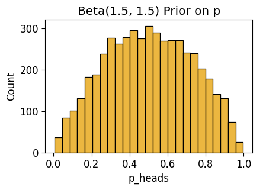
def draw_post_sample(model, num_draws=5000):
with model:
post_idata = pm.sample(draws=num_draws, random_state=5650)
post_df = post_idata.posterior.to_dataframe().reset_index().drop(columns='chain')
return post_df
inf_n1_df = draw_post_sample(inf_model)Initializing NUTS using jitter+adapt_diag...
Multiprocess sampling (4 chains in 4 jobs)
NUTS: [p_heads]Sampling 4 chains for 1_000 tune and 5_000 draw iterations (4_000 + 20_000 draws total) took 3 seconds.inf_n1_plot = gen_dist_plot(inf_n1_df, "Posterior (N = 1)")
inf_n1_plot.savefig()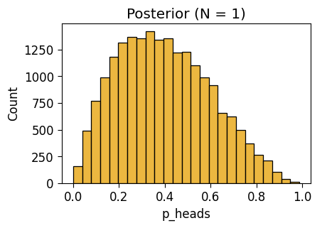
Observe \(N = 2\) Flips
with inf_model:
pm.set_data({'result_obs': two_flips_result})
inf_n2_df = draw_post_sample(inf_model) Initializing NUTS using jitter+adapt_diag...
Multiprocess sampling (4 chains in 4 jobs)
NUTS: [p_heads]Sampling 4 chains for 1_000 tune and 5_000 draw iterations (4_000 + 20_000 draws total) took 3 seconds.inf_n2_plot = gen_dist_plot(inf_n2_df, "Posterior (N = 2)")
inf_n2_plot.savefig()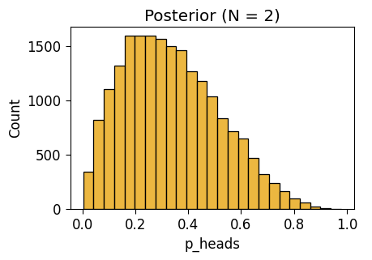
def plot_n_dists(n_df):
ax = pw.Brick(figsize=(5, 3.5));
sns.kdeplot(
x="p_heads", hue="n", fill=True, ax=ax, data=n_df,
common_norm=False
);
display(ax.savefig())
inf_n0_df['n'] = 0
inf_n1_df['n'] = 1
inf_n2_df['n'] = 2
inf_3_df = pd.concat([inf_n0_df, inf_n1_df, inf_n2_df])
plot_n_dists(inf_3_df)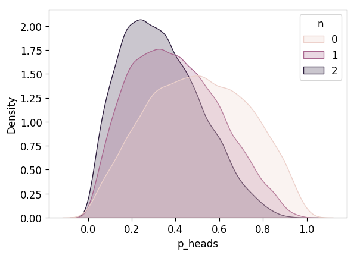
Observe \(N = 5\) Flips
with inf_model:
pm.set_data({'result_obs': five_flips_result})
inf_n5_df = draw_post_sample(inf_model)Initializing NUTS using jitter+adapt_diag...
Multiprocess sampling (4 chains in 4 jobs)
NUTS: [p_heads]Sampling 4 chains for 1_000 tune and 5_000 draw iterations (4_000 + 20_000 draws total) took 3 seconds.inf_n5_plot = gen_dist_plot(inf_n5_df, "Posterior (N = 5)")
inf_n5_plot.savefig()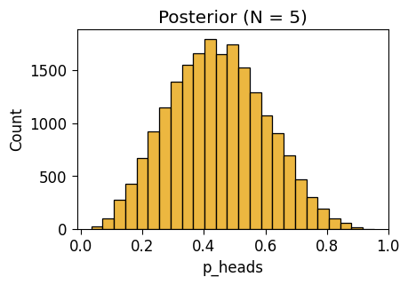
inf_n5_df['n'] = 5
inf_4_df = pd.concat([inf_3_df, inf_n5_df])
plot_n_dists(inf_4_df)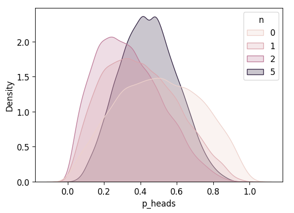
Observe \(N = 10\) Flips
with inf_model:
pm.set_data({'result_obs': ten_flips_result})
inf_n10_df = draw_post_sample(inf_model)Initializing NUTS using jitter+adapt_diag...
Multiprocess sampling (4 chains in 4 jobs)
NUTS: [p_heads]Sampling 4 chains for 1_000 tune and 5_000 draw iterations (4_000 + 20_000 draws total) took 3 seconds.inf_n10_df['n'] = 10
inf_5_df = pd.concat([inf_4_df, inf_n10_df])
plot_n_dists(inf_5_df)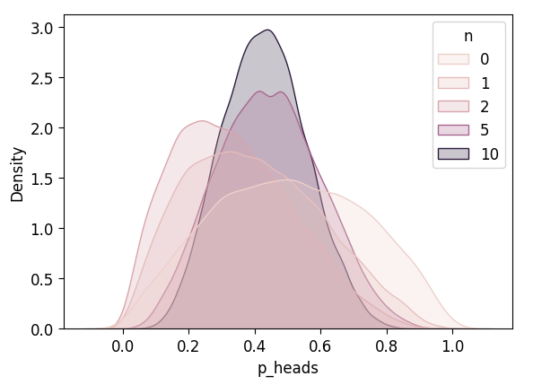
Observe \(N = 25\) Flips
[Part 2] Flat (Uniform) Prior
with pm.Model() as unif_model:
result_obs = pm.Data('result_obs', one_flip_result)
p_heads = pm.Beta("p_heads", 1, 1)
result = pm.Bernoulli("result", p=p_heads, observed=result_obs)
pm.model_to_graphviz(unif_model)unif_n0_df = draw_prior_sample(unif_model)Sampling: [p_heads, result]| draw | p_heads | |
|---|---|---|
| 0 | 0 | 0.970164 |
| 1 | 1 | 0.085831 |
| 2 | 2 | 0.101310 |
| 3 | 3 | 0.315523 |
| 4 | 4 | 0.285908 |
| ... | ... | ... |
| 4995 | 4995 | 0.254631 |
| 4996 | 4996 | 0.166792 |
| 4997 | 4997 | 0.772046 |
| 4998 | 4998 | 0.296384 |
| 4999 | 4999 | 0.331467 |
5000 rows × 2 columns
unif_n0_plot = gen_dist_plot(unif_n0_df, "Uniform Prior")
unif_n0_plot.savefig()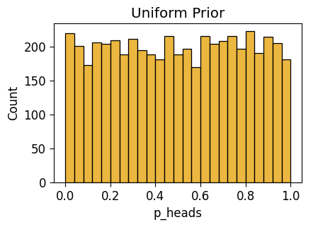
Posterior After \(N = 1\) Observed Flips
unif_n1_df = draw_post_sample(unif_model)Initializing NUTS using jitter+adapt_diag...
Multiprocess sampling (4 chains in 4 jobs)
NUTS: [p_heads]Sampling 4 chains for 1_000 tune and 5_000 draw iterations (4_000 + 20_000 draws total) took 3 seconds.unif_n1_plot = gen_dist_plot(unif_n1_df, f"Posterior After Observing X = {one_flip_result}")
unif_n1_plot.savefig()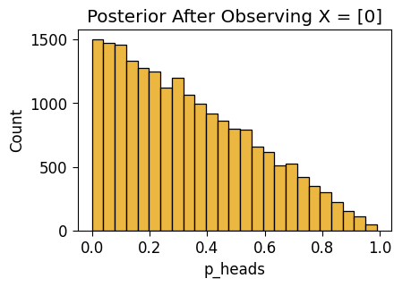
Posterior After \(N = 2\) Flips
with unif_model:
pm.set_data({'result_obs': two_flips_result})
unif_n2_df = draw_post_sample(unif_model)Initializing NUTS using jitter+adapt_diag...
Multiprocess sampling (4 chains in 4 jobs)
NUTS: [p_heads]Sampling 4 chains for 1_000 tune and 5_000 draw iterations (4_000 + 20_000 draws total) took 3 seconds.unif_n2_plot = gen_dist_plot(unif_n2_df, f"Posterior After Observing {two_flips_result}")
unif_n2_plot.savefig()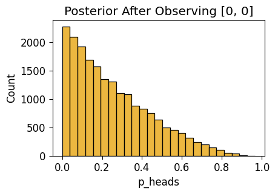
unif_n0_df['n'] = 0
unif_n1_df['n'] = 1
unif_n2_df['n'] = 2
unif_3_df = pd.concat([unif_n0_df, unif_n1_df, unif_n2_df])
plot_n_dists(unif_3_df)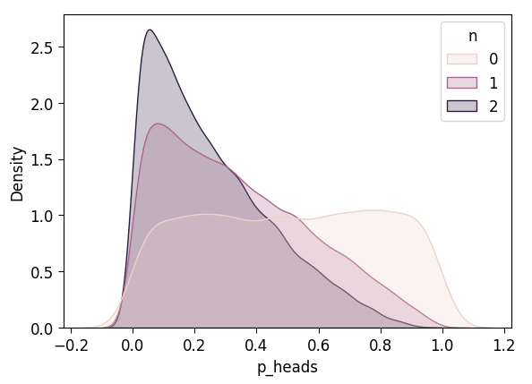
with unif_model:
pm.set_data({'result_obs': five_flips_result})
unif_n5_df = draw_post_sample(unif_model)Initializing NUTS using jitter+adapt_diag...
Multiprocess sampling (4 chains in 4 jobs)
NUTS: [p_heads]Sampling 4 chains for 1_000 tune and 5_000 draw iterations (4_000 + 20_000 draws total) took 3 seconds.unif_n5_df['n'] = 5
unif_4_df = pd.concat([unif_3_df, unif_n5_df])
plot_n_dists(unif_4_df)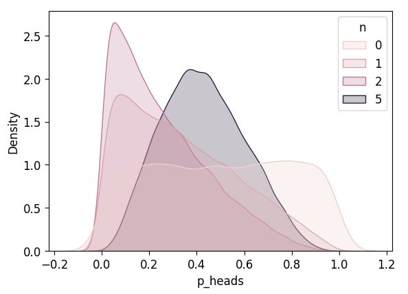
Observe \(N = 10\) Flips
with unif_model:
pm.set_data({'result_obs': ten_flips_result})
unif_n10_df = draw_post_sample(unif_model)Initializing NUTS using jitter+adapt_diag...
Multiprocess sampling (4 chains in 4 jobs)
NUTS: [p_heads]Sampling 4 chains for 1_000 tune and 5_000 draw iterations (4_000 + 20_000 draws total) took 3 seconds.unif_n10_df['n'] = 10
unif_5_df = pd.concat([unif_4_df, unif_n10_df])
plot_n_dists(unif_5_df)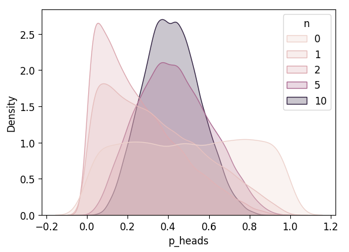
[Part 3] Skeptical (Jeffreys) Prior
This prior is itself derived from an approach to Bayesian statistics called “Objective Bayes”, within which the Jeffreys Prior for the Bernoulli parameter \(p\) has a special status.
For our purposes, however, we can just view it as a “skeptical” prior: it encodes an assumption that the coin is very biased, i.e., that before seeing any actual coin flips we think that \(p = 0\) and \(p = 1\) are more likely than any of the values in between (any of the values \(p \in (0, 1)\)). This means that—relative to the Beta and Uniform cases—someone with these priors would require a very “even” mixture of heads and tails to “cancel out” their pre-existing belief that the coin is biased!
with pm.Model() as flat_model:
result_obs = pm.Data('result_obs', one_flip_result)
p_heads = pm.Beta("p_heads", 0.5, 0.5)
result = pm.Bernoulli("result", p=p_heads, observed=result_obs)
pm.model_to_graphviz(flat_model)flat_n0_df = draw_prior_sample(flat_model)Sampling: [p_heads, result]flat_n0_plot = gen_dist_plot(flat_n0_df, "Flat(-ish) Prior")
flat_n0_plot.savefig()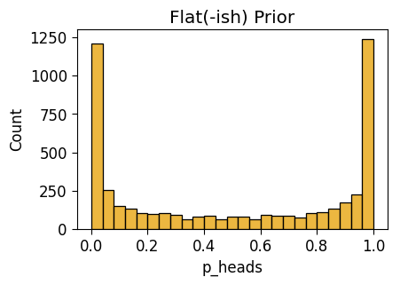
Observe \(N = 1\) Flip
flat_n1_df = draw_post_sample(flat_model)Initializing NUTS using jitter+adapt_diag...
Multiprocess sampling (4 chains in 4 jobs)
NUTS: [p_heads]Sampling 4 chains for 1_000 tune and 5_000 draw iterations (4_000 + 20_000 draws total) took 3 seconds.flat_n1_plot = gen_dist_plot(flat_n1_df, f"Posterior After Observing {one_flip_result}")
flat_n1_plot.savefig()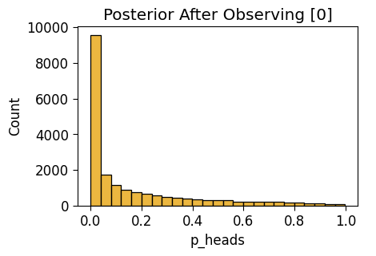
Observe \(N = 2\) Flips
with flat_model:
pm.set_data({'result_obs': two_flips_result})
pm.model_to_graphviz(flat_model)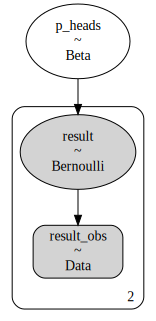
flat_n2_df = draw_post_sample(flat_model)Initializing NUTS using jitter+adapt_diag...
Multiprocess sampling (4 chains in 4 jobs)
NUTS: [p_heads]Sampling 4 chains for 1_000 tune and 5_000 draw iterations (4_000 + 20_000 draws total) took 3 seconds.flat_n2_plot = gen_dist_plot(flat_n2_df, "Posterior")
flat_n2_plot.savefig()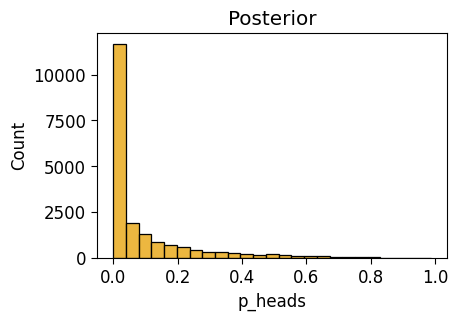
flat_n0_df['n'] = 0
flat_n1_df['n'] = 1
flat_n2_df['n'] = 2
flat_3_df = pd.concat([flat_n0_df, flat_n1_df, flat_n2_df])
plot_n_dists(flat_3_df)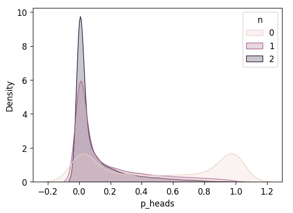
with flat_model:
pm.set_data({'result_obs': five_flips_result})
flat_n5_df = draw_post_sample(flat_model)Initializing NUTS using jitter+adapt_diag...
Multiprocess sampling (4 chains in 4 jobs)
NUTS: [p_heads]Sampling 4 chains for 1_000 tune and 5_000 draw iterations (4_000 + 20_000 draws total) took 3 seconds.flat_n5_df['n'] = 5
flat_4_df = pd.concat([flat_3_df, flat_n5_df])
plot_n_dists(flat_4_df)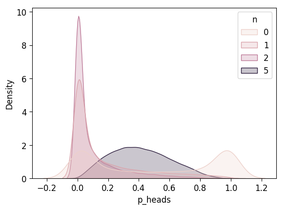
Observe \(N = 10\) Flips
with flat_model:
pm.set_data({'result_obs': ten_flips_result})
flat_n10_df = draw_post_sample(flat_model)Initializing NUTS using jitter+adapt_diag...
Multiprocess sampling (4 chains in 4 jobs)
NUTS: [p_heads]Sampling 4 chains for 1_000 tune and 5_000 draw iterations (4_000 + 20_000 draws total) took 3 seconds.flat_n10_df['n'] = 10
flat_5_df = pd.concat([flat_4_df, flat_n10_df])
plot_n_dists(flat_5_df)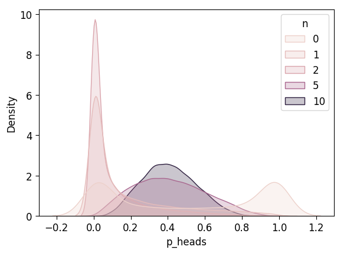
[Part 4] Which One Learned Most Efficiently?
After \(N = 2\)?
def plot_dist_comparison(combined_df):
ax = pw.Brick(figsize=(5, 3.5));
sns.kdeplot(
x="p_heads", hue="prior", fill=True, ax=ax, data=combined_df,
common_norm=False
);
display(ax.savefig())inf_n2_df['prior'] = 'Beta(2, 2)'
unif_n2_df['prior'] = 'Beta(1, 1)'
flat_n2_df['prior'] = 'Beta(0.5, 0.5)'
all_n2_df = pd.concat([inf_n2_df, unif_n2_df, flat_n2_df])
plot_dist_comparison(all_n2_df)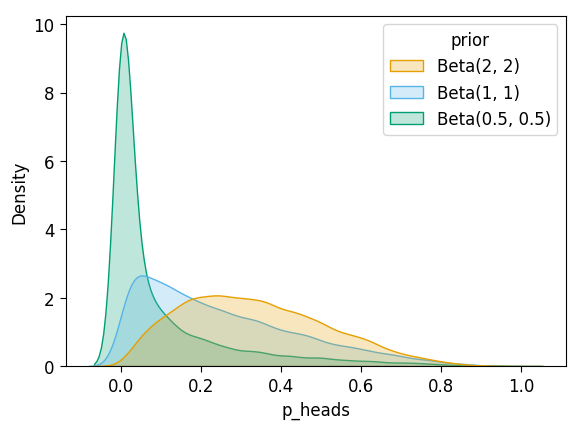
After \(N = 5\)?
inf_n5_df['prior'] = 'Beta(2, 2)'
unif_n5_df['prior'] = 'Beta(1, 1)'
flat_n5_df['prior'] = 'Beta(0.5, 0.5)'
all_n5_df = pd.concat([inf_n5_df, unif_n5_df, flat_n5_df])
plot_dist_comparison(all_n5_df)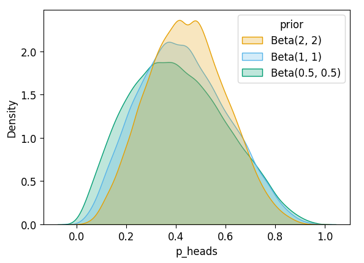
After \(N = 10\)?
inf_n10_df['prior'] = 'Beta(2, 2)'
unif_n10_df['prior'] = 'Beta(1, 1)'
flat_n10_df['prior'] = 'Beta(0.5, 0.5)'
all_n10_df = pd.concat([inf_n10_df, unif_n10_df, flat_n10_df])
plot_dist_comparison(all_n10_df)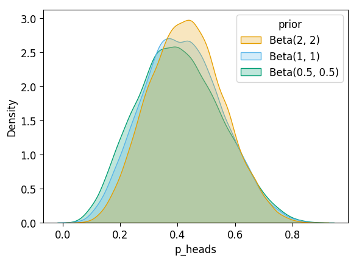
with inf_model:
print(pm.find_MAP()){'p_heads_logodds__': array(-0.33647223), 'p_heads': array(0.41666667)}with unif_model:
print(pm.find_MAP()){'p_heads_logodds__': array(-0.4054651), 'p_heads': array(0.4)}with flat_model:
print(pm.find_MAP()){'p_heads_logodds__': array(-0.47956846), 'p_heads': array(0.38235403)}